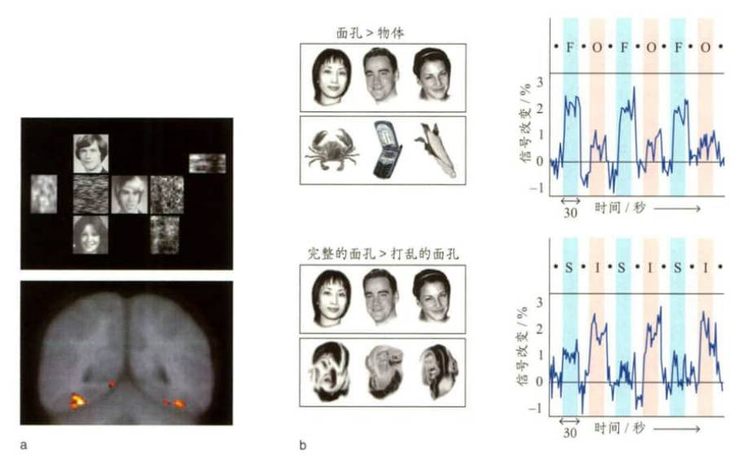

考虑物体识别的四个重要概念
- 精确地使用术语（注意知觉和识别地区别）
- 物体知觉是统一的
- 知觉能力是十分灵活，稳健的
- 知觉产物与记忆密切交织
集群编码假说
物体是由一群定义性特征的同时激活来定义的。
物体识别是各种复杂特征探测器激活的结果。
顶叶神经元有非选择性的大感受野，包括表征中央凹和外周信息的细胞。
颞叶神经元有大感受野，但具有选择性，总是表达中央凹的信息
祖母细胞一词是为了传达一种什么观念
识别是神经元对特定刺激的精确反应
层级编码理论
初级特征被整合形成可被认识单元识别的物体
第一层：边探测器
第二层：角探测器
extrastriate body area (EBA)/纹外躯体区
颞枕外侧皮质的一个功能区域。相对于其他有生命和无生命刺激，该区域对包含躯体部位的图像表现出更强激活。比较梭状回躯体区（fusiform body area）。
fNIRS
参见功能性近红外光谱成像（functional near-infrared spectroscopy）。
integrative visual agnosia /整合性视觉失认症
失认症的一种，病人无法将物体的各个部分组合成一个整体而导致物体识别失败。例如，病人可以临摹一幅图画，但他们的知觉是松散凌乱的。比较统觉性视觉失认症（apperceptive visual agnosia）和联合性视觉失认症（associative visual agnosia）。
lateral occipital cortex (LOC)/外侧枕叶皮质
纹状体外皮质的一个区域，为腹侧通路的一部分。外侧枕叶对形状知觉和识别至关重要。
object constancy /物体恒常性
在各种观察位置、光照和背景条件中认识到一个物体不变性的能力。例如，虽然从一辆汽车在远处到车过来时在视网膜上的成像大小变化很大，但是我们还是把汽车知觉为大小不变的物体。类似地，当我们从不同的角度看一个物体时，我们能认识到它是同一物体。
知觉恒常性是指，当知觉的客观条件在一定范围内改变时，知觉映像在相当程度上却保持它的稳定性。
visual agnosia /视觉失认症
一种视知觉障碍，病人识别颜色、形状或运动属性的能力尚好，但无法识别整个物体或判定物体的用途。
识别部分，无法识别整体，用途
EBA
参见纹外躯体区 (extrastriate body area)。
FBA
参见梭状回躯体区（fusiform body area）。
functional near-infrared spectroscopy (fNIRS) /功能性近红外光谱成像
一种非侵入式神经成像技术，测量含氧和去氧血红蛋白的近红外光吸收率，可提供类似于功能磁共振成像的及时大脑活动信息。
LOC
参见外侧枕叶皮质（lateral occipital cortex）。
PPA
参见海马旁回位置区（parahippocampal place area）。
apperceptive visual agnosia / 统觉性视觉失认症
涉及高水平知觉分析障碍的一种失认症。病人能从某一常用角度识别物体，但如果视角不常见或者物体被遮挡，对物体的识别能力就会下降。比较联合性视觉失认症 (associative visual agnosia) 和整合性视觉失认症 (integrative visual agnosia )。
dorsal stream / 背侧通路
也称枕顶通路 (occipitoparietal stream)，一条加工视觉刺激的神经通路，主要负责空间感知（用于确定对象的位置）和分析场景中不同对象之间的空间配置。比较腹侧通路 (ventral stream)。
holistic processing /整体加工
强调对一个物体整体形状加工的知觉分析方式。面孔知觉被认为是整体加工的最佳例子。面孔识别反映的是对面孔各特征组合的识别，而不是对单个特征的识别。
gnostic unit /认识单元
一个或一组加工特定物体知觉（如苹果）的神经元。认识单元的概念以知觉的层次模型为基础，认为在神经系统的更高层次水平，神经元在对什么做出反应上变得更具选择性。
occipitoparietal stream /枕顶通路
参见背侧通路（dorsal stream）。
ventral stream /腹侧通路
也称枕颞通路（occipitotemporal stream），一条跨越枕叶和颞叶的视觉通路，与物体识别和视觉记忆有关。比较背侧通路（dorsal stream）。
visual agnosia /视觉失认症
一种视知觉障碍，病人识别颜色、形状或运动属性的能力尚好，但无法识别整个物体或判定物体的用途。
FFA
参见梭状回面孔区（fusiform face area）。
fusiform body area (FBA)/梭状回躯体区
位于颞枕联合皮质外侧，紧靠梭状回面孔区且与其部分重叠的一个功能区。相对于其他有生命和无生命刺激，该区域可对包含身体部位的图像做出更强的反应。比较纹外躯体区（extrastriate body area）。
parahippocampal place area (PPA) /海马旁回位置区
位于颞叶海马旁区的大脑功能区，对描述场景或地点的刺激做出优先反应。比较梭状回面孔区（fusiform face area）。
prosopagnosia /面孔失认症
一种神经系统综合征，表现为面孔识别能力缺陷。有些病人会表现出一种类别特异性缺陷，即选择性面孔知觉缺陷。在另一些病人中，面孔失认症只是更一般性失认症的一部分。面孔失认症通常与双侧腹侧通路病变有关，但也可源于右半球的单侧病变。
RS effect
参见重复抑制效应（repetition suppression effect）。
associative visual agnosia / 联合性视觉失认症
失认症的一种，病人缺乏把知觉表征和长时记忆中对知觉的知识关联起来的能力。例如，病人可以识别两张图片是同一个物体，但不能说明这个物体的功能或者在哪里可能找到这个物体。比较统觉性视觉失认症 (apperceptive visual agnosia) 和整合性视觉失认症 (integrative visual agnosia )。
occipitotemporal stream /枕颞通路
参见腹侧通路（ventral stream）。
repetition suppression (RS) effect /重复抑制效应
在fMRI中，BOLD对重复出现刺激的反应会降低的现象。
fusiform face area (FFA)/梭状回面孔区
位于颞叶腹侧表面梭状回上的一个功能区，对特定刺激（如面孔）做出反应。比较海马旁回位置区（parahippocampal place area）。
